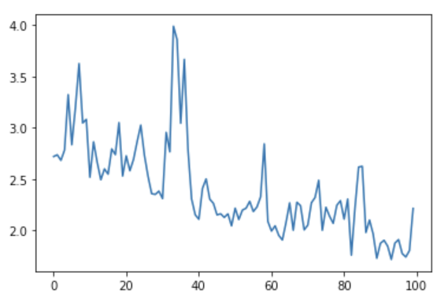

In this episode we will learn how to create and train a neural network using Keras to solve a simple classification task.
The goal of this episode is to quickly get your hands dirty in actually defining and training a neural network,
without going into depth of how neural networks work on a technical or mathematical level.
We want you to go through the full deep learning workflow once before going into more details.
In fact, this is also what we would recommend you to do when working on real-world problems:
First quickly build a working pipeline, while taking shortcuts.
Then, slowly make the pipeline more advanced while you keep on evaluating the approach.
In episode 3 we will expand on the concepts that are lightly introduced in this episode.
Some of these concepts include: how to monitor the training progress and how optimization works.
Instructor
It is good to stress the goal for this episode a few times, because learners will usually have a lot of questions like:
‘Why don’t we normalize our features’ or ‘Why do we choose Adam optimizer?’.
It can be a good idea to park some of these questions for discussion in episode 3 and 4.
As a reminder below are the steps of the deep learning workflow:
Formulate / Outline the problem
Identify inputs and outputs
Prepare data
Choose a pretrained model or start building architecture from scratch
Choose a loss function and optimizer
Train the model
Perform a Prediction/Classification
Measure performance
Refine the model
Save model
In this episode we will focus on a minimal example for each of these steps, later episodes will build on this knowledge to go into greater depth for some or all of these steps.
GPU usage
For this lesson having a GPU (graphics processing unit) available is not needed.
We specifically use very small toy problems so that you do not need one.
However, Keras will use your GPU automatically when it is available.
Using a GPU becomes necessary when tackling larger datasets or complex problems which
require a more complex neural network.
1. Formulate/outline the problem: penguin classification
In this episode we will be using the penguin dataset. This is a dataset that was published in 2020 by Allison Horst and contains data on three different species of the penguins.
We will use the penguin dataset to train a neural network which can classify which species a
penguin belongs to, based on their physical characteristics.
Goal
The goal is to predict a penguins’ species using the attributes available in this dataset.
The palmerpenguins data contains size measurements for three penguin species observed on three islands in the Palmer Archipelago, Antarctica.
The physical attributes measured are flipper length, beak length, beak width, body mass, and sex.
To identify the inputs and outputs that we will use to design the neural network we need to familiarize
ourselves with the dataset. This step is sometimes also called data exploration.
We will start by importing the Seaborn library that will help us get the dataset and visualize it.
Seaborn is a powerful library with many visualizations. Keep in mind it requires the data to be in a
pandas dataframe, luckily the datasets available in seaborn are already in a pandas dataframe.
importseabornassns
We can load the penguin dataset using
penguins=sns.load_dataset('penguins')
This will give you a pandas dataframe which contains the penguin data.
One nice visualization for datasets with relatively few attributes is the Pair Plot.
This can be created using sns.pairplot(...). It shows a scatterplot of each attribute plotted against each of the other attributes.
By using the hue='species' setting for the pairplot the graphs on the diagonal are layered kernel density estimate plots for the different values of the species column.
Take a look at the pairplot we created. Consider the following questions:
Is there any class that is easily distinguishable from the others?
Which combination of attributes shows the best separation for all 3 class labels at once?
(optional) Create a similar pairplot, but with hue="sex". Explain the patterns you see.
Which combination of features distinguishes the two sexes best?
Solution
The plots show that the green class, Gentoo is somewhat more easily distinguishable from the other two.
The other two seem to be separable by a combination of bill length and bill
depth (other combinations are also possible such as bill length and flipper length).
You see that for each species females have smaller bills and flippers, as well as a smaller body mass.
You would need a combination of the species and the numerical features to successfully distinguish males from females.
The combination of bill_depth_mm and body_mass_g gives the best separation.
Input and Output Selection
Now that we have familiarized ourselves with the dataset we can select the data attributes to use
as input for the neural network and the target that we want to predict.
In the rest of this episode we will use the bill_length_mm, bill_depth_mm, flipper_length_mm, body_mass_g attributes.
The target for the classification task will be the species.
Data Exploration
Exploring the data is an important step to familiarize yourself with the problem and to help you
determine the relevant inputs and outputs.
The input data and target data are not yet in a format that is suitable to use for training a neural network.
For now we will only use the numerical features bill_length_mm, bill_depth_mm, flipper_length_mm, body_mass_g only,
so let’s drop the categorical columns:
# Drop categorical columnspenguins_filtered=penguins.drop(columns=['island','sex'])
During the exploration phase you may have noticed that some rows in the dataset have missing (NaN)
values, leaving such values in the input data will ruin the training, so we need to deal with them.
There are many ways to deal with missing values, but for now we will just remove the offending rows by adding a call to dropna():
# Drop the rows that have NaN values in thempenguins_filtered=penguins_filtered.dropna()
Finally, we select only the features
# Extract columns corresponding to featuresfeatures=penguins_filtered.drop(columns=['species'])
Second, the target data is also in a format that cannot be used in training.
A neural network can only take numerical inputs and outputs, and learns by
calculating how “far away” the species predicted by the neural network is
from the true species.
When the target is a string category column as we have here, we need to transform this column into a numerical format first.
Again, there are many ways to do this. We will be using the one-hot encoding.
This encoding creates multiple columns, as many as there are unique values, and
puts a 1 in the column with the corresponding correct class, and 0’s in
the other columns.
For instance, for a penguin of the Adelie species the one-hot encoding would be 1 0 0.
Fortunately, Pandas is able to generate this encoding for us.
importpandasaspdtarget=pd.get_dummies(penguins_filtered['species'])target.head()# print out the top 5 to see what it looks like.
One-hot encoding
How many output neurons will our network have now that we one-hot encoded the target class?
Finally, we will split the dataset into a training set and a test set.
As the names imply we will use the training set to train the neural network,
while the test set is kept separate.
We will use the test set to assess the performance of the trained neural network
on unseen samples.
In many cases a validation set is also kept separate from the training and test sets (i.e. the dataset is split into 3 parts).
This validation set is then used to select the values of the parameters of the neural network and the training methods.
For this episode we will keep it at just a training and test set however.
To split the cleaned dataset into a training and test set we will use a very convenient
function from sklearn called train_test_split.
The first two parameters are the dataset (in our case features) and the corresponding targets (i.e. defined as target).
Next is the named parameter test_size this is the fraction of the dataset that is
used for testing, in this case 0.2 means 20% of the data will be used for testing.
random_state controls the shuffling of the dataset, setting this value will reproduce
the same results (assuming you give the same integer) every time it is called.
shuffle which can be either True or False, it controls whether the order of the rows of the dataset is shuffled before splitting. It defaults to True.
stratify is a more advanced parameter that controls how the split is done. By setting it to target the train and test sets the function will return will have roughly the same proportions (with regards to the number of penguins of a certain species) as the dataset.
By setting random_state=0 we ensure that everyone has the same train-test split.
When doing machine learning and deep learning it is crucial that you use the same train and test dataset for different experiments.
Comparing evaluation metrics between experiments run on different data splits is meaningless,
because the accuracy of a model depends on the data used to train and test it.
BREAK
This is a good time for switching instructor and/or a break.
Keras is a machine learning framework with ease of use as one of its main features.
It is part of the tensorflow python package and can be imported using fromtensorflowimportkeras.
Keras includes functions, classes and definitions to define deep learning models, cost functions and optimizers (optimizers are used to train a model).
Before we move on to the next section of the workflow we need to make sure we have Keras imported.
We do this as follows:
fromtensorflowimportkeras
For this episode it is useful if everyone gets the same results from their training.
Keras uses a random number generator at certain points during its execution.
Therefore we will need to set two random seeds, one for numpy and one for tensorflow:
We use a random seed here to ensure that we get the same results every time we run this code.
This makes our results reproducible and allows us to better compare results between different experiments.
Please note that even though you have selected a random seed, this seed is used to generate a
different random number every time you execute a Jupyter cell.
So, to get truly replicable deep learning pipelines you need to run the notebook from start to end in one go.
We will now build a simple neural network from scratch using Keras.
With Keras you compose a neural network by creating layers and linking them
together. For now we will only use one type of layer called a fully connected
or Dense layer. In Keras this is defined by the keras.layers.Dense class.
A dense layer has a number of neurons, which is a parameter you can choose when
you create the layer.
When connecting the layer to its input and output layers every neuron in the dense
layer gets an edge (i.e. connection) to all of the input neurons and all of the output neurons.
The hidden layer in the image in the introduction of this episode is a Dense layer.
The input in Keras also gets special treatment, Keras automatically calculates the number of inputs
and outputs a layer needs and therefore how many edges need to be created.
This means we need to inform Keras how big our input is going to be. We do this by instantiating a keras.Input class and tell it how big our input is, thus the number of columns it contains.
inputs=keras.Input(shape=(X_train.shape[1],))
We store a reference to this input class in a variable so we can pass it to the creation of
our hidden layer.
Creating the hidden layer can then be done as follows:
The instantiation here has 2 parameters and a seemingly strange combination of parentheses, so
let us take a closer look.
The first parameter 10 is the number of neurons we want in this layer, this is one of the
hyperparameters of our system and needs to be chosen carefully. We will get back to this in the section
on refining the model.
The second parameter is the activation function to use. We choose relu which returns 0
for inputs that are 0 and below and the identity function (returning the same value)
for inputs above 0.
This is a commonly used activation function in deep neural networks that is proven to work well.
Next we see an extra set of parenthenses with inputs in them. This means that after creating an
instance of the Dense layer we call it as if it was a function.
This tells the Dense layer to connect the layer passed as a parameter, in this case the inputs.
Finally we store a reference in the hidden_layer variable so we can pass it to the output layer in a minute.
Now we create another layer that will be our output layer.
Again we use a Dense layer and so the call is very similar to the previous one.
Because we chose the one-hot encoding, we use three neurons for the output layer.
The softmax activation ensures that the three output neurons produce values in the range
(0, 1) and they sum to 1.
We can interpret this as a kind of ‘probability’ that the sample belongs to a certain
species.
Now that we have defined the layers of our neural network we can combine them into
a Keras model which facilitates training the network.
The model summary here can show you some information about the neural network we have defined.
Trainable and non-trainable parameters
Keras distinguishes between two types of weights, namely:
trainable parameters: these are weights of the neurons that are modified when we train the model in order to minimize our loss function (we will learn about loss functions shortly!).
non-trainable parameters: these are weights of the neurons that are not changed when we train the model. These could be for many reasons - using a pre-trained model, choice of a particular filter for a convolutional neural network, and statistical weights for batch normalization are some examples.
If these reasons are not clear right away, don’t worry! In later episodes of this course, we will touch upon a couple of these concepts.
Instructor
For optional question 3 in the challenge below named ‘Visualizing the model’, the goal is to visualize the network. It supplements the textual explanation of output from model.summary().
You could choose to show and discuss the resulting visualization to the learners, so that learners who did not finish the optional exercise can also learn from the visualization of the model.
Create the neural network
With the code snippets above, we defined a Keras model with 1 hidden layer with
10 neurons and an output layer with 3 neurons.
How many parameters does the resulting model have?
What happens to the number of parameters if we increase or decrease the number of neurons
in the hidden layer?
(optional) Visualizing the model
Optionally, you can also visualize the same information as model.summary() in graph form.
This step requires the command-line tool dot from Graphviz installed, you installed it by following the setup instructions.
You can check that the installation was successful by executing dot-V in the command line. You should get something
as follows:
$dot-V
dot-graphvizversion2.43.0(0)
(optional) Provided you have dot installed, execute the plot_model function
as shown below.
So far we have used the Functional API of Keras.
You can also implement neural networks using the Sequential model.
As you can read in the documentation, the Sequential model is appropriate for a plain stack of layers
where each layer has exactly one input tensor and one output tensor.
(optional) Use the Sequential model to implement the same network
The model has 83 trainable parameters. Each of the 10 neurons in the in the dense hidden layer is connected to each of
the 4 inputs in the input layer resulting in 40 weights that can be trained. The 10 neurons in the hidden layer are also
connected to each of the 3 outputs in the dense_1 output layer, resulting in a further 30 weights that can be trained.
By default Dense layers in Keras also contain 1 bias term for each neuron, resulting in a further 10 bias values for the
hidden layer and 3 bias terms for the output layer. 40+30+10+3=83 trainable parameters.
The value (332.00B) next to it describes the memory footprint for model weights and this depends on their data type.
Take a look at what model.dtype is.
print(model.dtype)
float32
The model weights are represented using float32 data type, which consumes 32 bits or 4 bytes for each weight.
We have 83 parameters, and therefore in total, the model requires 83*4=332 bytes of memory to load
into the computer’s memory.
If you increase the number of neurons in the hidden layer the number of
trainable parameters in both the hidden and output layer increases or
decreases in accordance with the number of neurons added.
Each extra neuron has 4 weights connected to the input layer, 1 bias term, and 3 weights connected to the output layer.
So in total 8 extra parameters.
The name in quotes within the string Model:"functional" may be different in your view; this detail is not important.
(optional) Visualizing the model
Upon executing the plot_model function, you should see the following image.
We will use the Functional API for the remainder of this course, since it is more flexible and more explicit.
How to choose an architecture?
Even for this small neural network, we had to make a choice on the number of hidden neurons.
Other choices to be made are the number of layers and type of layers (as we will see later).
You might wonder how you should make these architectural choices.
Unfortunately, there are no clear rules to follow here, and it often boils down to a lot of
trial and error. However, it is recommended to look what others have done with similar datasets and problems.
Another best practice is to start with a relatively simple architecture. Once running start to add layers and tweak the network to see if performance increases.
If your data and problem is very similar to what others have done, you can often use a pretrained network.
Even if your problem is different, but the data type is common (for example images), you can use a pretrained network and finetune it for your problem.
A large number of openly available pretrained networks can be found on Hugging Face (especially LLMs), MONAI (medical imaging), the Model Zoo, pytorch hub or tensorflow hub.
We will cover the concept of Transfer Learning in episode 5
We have now designed a neural network that in theory we should be able to
train to classify Penguins.
However, we first need to select an appropriate loss
function that we will use during training.
This loss function tells the training algorithm how wrong, or how ‘far away’ from the true
value the predicted value is.
For the one-hot encoding that we selected earlier a suitable loss function is the Categorical Crossentropy loss.
In Keras this is implemented in the keras.losses.CategoricalCrossentropy class.
This loss function works well in combination with the softmax activation function
we chose earlier.
The Categorical Crossentropy works by comparing the probabilities that the
neural network predicts with ‘true’ probabilities that we generated using the one-hot encoding.
This is a measure for how close the distribution of the three neural network outputs corresponds to the distribution of the three values in the one-hot encoding.
It is lower if the distributions are more similar.
For more information on the available loss functions in Keras you can check the
documentation.
Next we need to choose which optimizer to use and, if this optimizer has parameters, what values
to use for those. Furthermore, we need to specify how many times to show the training samples to the optimizer.
Once more, Keras gives us plenty of choices all of which have their own pros and cons,
but for now let us go with the widely used Adam optimizer.
Adam has a number of parameters, but the default values work well for most problems.
So we will use it with its default parameters.
Combining this with the loss function we decided on earlier we can now compile the
model using model.compile.
Compiling the model prepares it to start the training.
Training the model is done using the fit method, it takes the input data and
target data as inputs and it has several other parameters for certain options
of the training.
Here we only set a different number of epochs.
One training epoch means that every sample in the training data has been shown
to the neural network and used to update its parameters.
history=model.fit(X_train,y_train,epochs=100)
The fit method returns a history object that has a history attribute with the training loss and
potentially other metrics per training epoch.
It can be very insightful to plot the training loss to see how the training progresses.
Using seaborn we can do this as follows:
It could be that you get a different plot than the one shown here.
This could be because of a different random initialization of the model or a different split of the data.
This difference can be avoided by setting random_state and random seed in the same way like we discussed
in When to use random seeds?.
This plot can be used to identify whether the training is well configured or whether there
are problems that need to be addressed.
The Training Curve
Looking at the training curve we have just made.
How does the training progress?
Does the training loss increase or decrease?
Does it change quickly or slowly?
Does the graph look very jittery?
Do you think the resulting trained network will work well on the test set?
When the training process does not go well:
(optional) Something went wrong here during training. What could be the problem, and how do you see that in the training curve?
Also compare the range on the y-axis with the previous training curve.

The training loss decreases quickly. It drops in a smooth line with little jitter.
This is ideal for a training curve.
The results of the training give very little information on its performance on a test set.
You should be careful not to use it as an indication of a well trained network.
(optional) The loss does not go down at all, or only very slightly. This means that the model is not learning anything.
It could be that something went wrong in the data preparation (for example the labels are not attached to the right features).
In addition, the graph is very jittery. This means that for every update step,
the weights in the network are updated in such a way that the loss sometimes increases a lot and sometimes decreases a lot.
This could indicate that the weights are updated too much at every learning step and you need a smaller learning rate
(we will go into more details on this in the next episode).
Or there is a high variation in the data, leading the optimizer to change the weights in different directions at every learning step.
This could be addressed by presenting more data at every learning step (or in other words increasing the batch size).
In this case the graph was created by training on nonsense data, so this a training curve for a problem where nothing can be learned really.
We will take a closer look at training curves in the next episode. Some of the concepts touched upon here will also be further explained there.
Now that we have a trained neural network, we can use it to predict new samples
of penguin using the predict function.
We will use the neural network to predict the species of the test set
using the predict function.
We will be using this prediction in the next step to measure the performance of our
trained network.
This will return a numpy matrix, which we convert
to a pandas dataframe to easily see the labels.
Remember that the output of the network uses the softmax activation function and has three
outputs, one for each species. This dataframe shows this nicely.
We now need to transform this output to one penguin species per sample.
We can do this by looking for the index of highest valued output and converting that
to the corresponding species.
Pandas dataframes have the idxmax function, which will do exactly that.
Now that we have a trained neural network it is important to assess how well it performs.
We want to know how well it will perform in a realistic prediction scenario, measuring
performance will also come back when refining the model.
We have created a test set (i.e. y_test) during the data preparation stage which we will use
now to create a confusion matrix.
With the predicted species we can now create a confusion matrix and display it using seaborn.
A confusion matrix is an NxN matrix used for evaluating the performance of a classification model, where N is the number of target classes.
The matrix compares the actual target values with those predicted from the classification model, which gives a holistic view of how well the classification model is performing.
To create a confusion matrix we will use another convenience function from sklearn called confusion_matrix.
This function takes as a first parameter the true labels of the test set.
We can get these by using the idxmax method on the y_test dataframe.
The second parameter is the predicted labels which we did above.
Unfortunately, this matrix is not immediately understandable. Its not clear which column and which row corresponds to which species.
So let’s convert it to a Pandas Dataframe with its index and columns set to the species as follows:
# Convert to a pandas dataframeconfusion_df=pd.DataFrame(matrix,index=y_test.columns.values,columns=y_test.columns.values)# Set the names of the x and y axis, this helps with the readability of the heatmap.confusion_df.index.name='True Label'confusion_df.columns.name='Predicted Label'confusion_df.head()
We can then use the heatmap function from seaborn to create a nice visualization of
the confusion matrix.
The annot=True parameter here will put the numbers from the confusion matrix in
the heatmap.
Here are more explanations of this confusion matrix and the classification model.
The first row: There are 30 Adelie penguins in the test data, with 22 identified as Adelie (valid), 8 being identified as Gentoo (invalid), and no Adelie is identified as Chinstrap.
The second row: There are 14 Chinstrap pengunis in the test data, with 5 identified as Adelie (invalid), none are correctly recognized as Chinstrap, and 9 Chinstraps are identified as Gentoo (invalid).
The third row: There are 25 Gentoo penguins in the test data, with 6 identified as Adelie (invalid), none being recognized as Chinstrap (invalid), and 19 Gentoos are identified as Gentoo (valid).
Confusion Matrix
Measure the performance of the neural network you trained and
visualize a confusion matrix.
Did the neural network perform well on the test set?
Did you expect this from the training loss you saw?
What could we do to improve the performance?
Solution
The confusion matrix shows that the predictions for Adelie and Gentoo are decent, but could be improved. However, Chinstrap is not predicted ever.
If we go back to the Pair Plot in the Visualization section above, we can figure out that the biggest challenge is distinguishing the Chinstrap penguins from the marginal distributions of the four features (bill length, bill depth, flipper length, and body mass). That means that there is no single variable that separates Chinstrap penguins from all other species. Only the combination of bill length and bill depth gives a good separation of Chinstrap from Adelie and Gentoo penguins.
The training loss was very low, so the low accuracy on the test set may be surprising. But this illustrates very well why a test set is important to give a realistic evaluation when training neural networks (or other machine learning classifiers).
We can try many things to improve the performance from here. One of the first things we can try is to balance the dataset better.
Furthermore, the constructed neural network has a limited number of parameters.
A practical workaround is to increase the number of dense layers and also the number of neurons in each dense layers.
In addition, adjusting the learning rate can also help achieving a high score for the prediction. You will get more info in the Advanced layer types episode.
Note that the outcome you have might be slightly different from what is shown in this tutorial.
As we discussed before the design and training of a neural network comes with
many hyperparameter and model architecture choices.
We will go into more depth of these choices in later episodes.
For now it is important to realize that the parameters we chose were
somewhat arbitrary and more careful consideration needs to be taken to
pick hyperparameter values.
It is very useful to be able to use the trained neural network at a later
stage without having to retrain it.
This can be done by using the save method of the model.
It takes a string as a parameter which is the path of a directory where the model is stored.
model.save('my_first_model.keras')
This saved model can be loaded again by using the load_model method as follows:
This loaded model can be used as before to predict.
# use the pretrained model herey_pretrained_pred=pretrained_model.predict(X_test)pretrained_prediction=pd.DataFrame(y_pretrained_pred,columns=target.columns.values)# idxmax will select the column for each row with the highest valuepretrained_predicted_species=pretrained_prediction.idxmax(axis="columns")print(pretrained_predicted_species)
The deep learning workflow is a useful tool to structure your approach, it helps to make sure you do not forget any important steps.
Exploring the data is an important step to familiarize yourself with the problem and to help you determine the relavent inputs and outputs.
One-hot encoding is a preprocessing step to prepare labels for classification in Keras.
A fully connected layer is a layer which has connections to all neurons in the previous and subsequent layers.
keras.layers.Dense is an implementation of a fully connected layer, you can set the number of neurons in the layer and the activation function used.
To train a neural network with Keras we need to first define the network using layers and the Model class. Then we can train it using the model.fit function.
Plotting the loss curve can be used to identify and troubleshoot the training process.
The loss curve on the training set does not provide any information on how well a network performs in a real setting.
Creating a confusion matrix with results from a test set gives better insight into the network’s performance.


![Grid of scatter plots and histograms comparing observed values of the four physicial attributes (features) measured in the penguins sampled. Scatter plots illustrate the distribution of values observed for each pair of features. On the diagonal, where one feature would be compared with itself, histograms are displayed that show the distribution of values observed for that feature, coloured according to the species of the individual sampled. The pair plot shows distinct but overlapping clusters of data points representing the different species, with no pair of features providing a clean separation of clusters on its own.](../_images/pairplot.png)